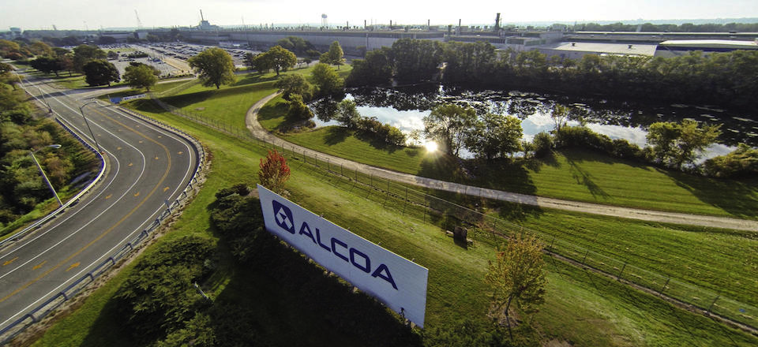

Intro

My name is Travis Stanger. I'm a Junior in Computer Engineering studying at Iowa State University.
I was born in Davenport, IA, where I have lived my entire life. I graduated from Davenport Central High School in June 2016, and began attending Iowa State University that August.
Work

My employment history begins in July 2015, when I began working at McDonald's at the age of 17. I began as a Crew Member, but quickly was promoted to Crew Trainer in October 2015. I worked nearly full-time during my first Summer here, and cut back to part time during the school year. Upon graduation from high school, I began working full time during Summer 2016 before I quit to head to college in August. Since graduating from high school, I have returned to work at McDonald's full time for all Summer and Winter breaks.
In October 2018, my career at McDonald's officially came to a close, as I was offered an internship with Arconic, formerly known as Alcoa, at their Davenport Works Facility. During the Summer of 2019, I will be working as a Process Control Systems Engineering Intern.
Projects

Habitat


Reflections
Below you will find links to all of the reflections completed during my time at Iowa State University, as well as the Ethics Essay, completed during CprE 394.
Ethics Essay
Contemporary Issues Reflection